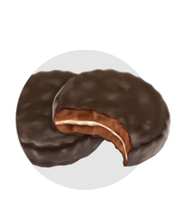
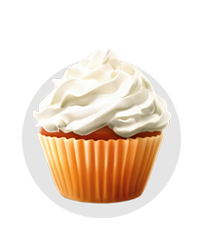
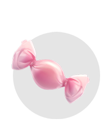

Почему так вкусно?
В основе пирожного Sweet Cupcake выпеченный бисквит, промоченный сахарным сиропом с добавлением коньяка и десертного вина. Прослоено суфлейной массой, смешанной с апельсиновым концентратом (калоризатор). Заглазировано шоколадной глазурью с нанесением сеточки из белой шоколадной глазури
-
Лучшие повара своего дела
-

Свежие ингредиенты
-

Приготовлено с любовью
Мы поставляем
Также мы делаем выпечку под заказ для различных праздников и банкетов. Заказать индивидуальную выпечку вы можете заполнив форму. После с Вами свяжется один из наших поваров и обсудит заказ более детально.
-
 Торты
ТортыДесерт, состоящий из одного или нескольких коржей, пропитанных кремом или джемом. Сверху торт обычно украшают кремом, глазурью или фруктами
-
Печенье
Десерт, состоящий из одного или нескольких коржей, пропитанных кремом или джемом. Сверху торт обычно украшают кремом, глазурью или фруктами
-
 Пончики
ПончикиДесерт, состоящий из одного или нескольких коржей, пропитанных кремом или джемом. Сверху торт обычно украшают кремом, глазурью или фруктами
-
 Рулеты
РулетыДесерт, состоящий из одного или нескольких коржей, пропитанных кремом или джемом. Сверху торт обычно украшают кремом, глазурью или фруктами
-
 Зефир
ЗефирДесерт, состоящий из одного или нескольких коржей, пропитанных кремом или джемом. Сверху торт обычно украшают кремом, глазурью или фруктами
-
 Шоколад
ШоколадДесерт, состоящий из одного или нескольких коржей, пропитанных кремом или джемом. Сверху торт обычно украшают кремом, глазурью или фруктами
-
Пирожные
Десерт, состоящий из одного или нескольких коржей, пропитанных кремом или джемом. Сверху торт обычно украшают кремом, глазурью или фруктами
-
Конфеты
Десерт, состоящий из одного или нескольких коржей, пропитанных кремом или джемом. Сверху торт обычно украшают кремом, глазурью или фруктами
Наша команда
-
Тони родился в Ленинграде в 1985 году. Учился в Морском техническом колледже по специальности «судовой повар». В кулинарную жизнь окунулся в 2005, когда попал к Фабрицио Фатуччи (ресторан Sculptors) и стал его правой рукой. Нередко они вместе лично обслуживали Президента России Дмитрия Медведева на открытых и закрытых мероприятия.
Тони неоднократно посещал Италию, где изучил местную гастрономию и набрался опыта.

Шеф-повар является постоянным участником различных номинаций и фестивалей: выступал в Париже на мировом фестивале Omnivore Paris в команде с Иваном Березуцким; представлял Россию на неделе русской кухни в Эстонии; регулярно участвовал в «Мадрид Фьюжн», съезде шеф-поваров со всего мира, где представляются новые гастрономические техники. В 2012 г. на Экономическом форуме обеспечивал работу кухни для высокопоставленных лиц. Не так давно был участником экспедиции на Белое море, где узнал все о региональных продуктах и особенностях кухни. В 2013 участвовал в фестивале «Северная кухня»; выезжал на гастроли в Москву, открывая «pop-up» проект DOOR 19.
Тони занимается развитием и инновациями в русской гастрономии, а также увлекается искусством — пишет картины.
-
Ричард родился в Ленинграде в 1985 году. Учился в Морском техническом колледже по специальности «судовой повар». В кулинарную жизнь окунулся в 2005, когда попал к Фабрицио Фатуччи (ресторан Sculptors) и стал его правой рукой. Нередко они вместе лично обслуживали Президента России Дмитрия Медведева на открытых и закрытых мероприятия.
Ричард неоднократно посещал Италию, где изучил местную гастрономию и набрался опыта.
Шеф-повар является постоянным участником различных номинаций и фестивалей: выступал в Париже на мировом фестивале Omnivore Paris в команде с Иваном Березуцким; представлял Россию на неделе русской кухни в Эстонии; регулярно участвовал в «Мадрид Фьюжн», съезде шеф-поваров со всего мира, где представляются новые гастрономические техники. В 2012 г. на Экономическом форуме обеспечивал работу кухни для высокопоставленных лиц. Не так давно был участником экспедиции на Белое море, где узнал все о региональных продуктах и особенностях кухни. В 2013 участвовал в фестивале «Северная кухня»; выезжал на гастроли в Москву, открывая «pop-up» проект DOOR 19.
Ричард занимается развитием и инновациями в русской гастрономии, а также увлекается искусством — пишет картины.
-
Майти родился в Ленинграде в 1985 году. Учился в Морском техническом колледже по специальности «судовой повар». В кулинарную жизнь окунулся в 2005, когда попал к Фабрицио Фатуччи (ресторан Sculptors) и стал его правой рукой. Нередко они вместе лично обслуживали Президента России Дмитрия Медведева на открытых и закрытых мероприятия.
Майти неоднократно посещал Италию, где изучил местную гастрономию и набрался опыта.
Шеф-повар является постоянным участником различных номинаций и фестивалей: выступал в Париже на мировом фестивале Omnivore Paris в команде с Иваном Березуцким; представлял Россию на неделе русской кухни в Эстонии; регулярно участвовал в «Мадрид Фьюжн», съезде шеф-поваров со всего мира, где представляются новые гастрономические техники. В 2012 г. на Экономическом форуме обеспечивал работу кухни для высокопоставленных лиц. Не так давно был участником экспедиции на Белое море, где узнал все о региональных продуктах и особенностях кухни. В 2013 участвовал в фестивале «Северная кухня»; выезжал на гастроли в Москву, открывая «pop-up» проект DOOR 19.
Майти занимается развитием и инновациями в русской гастрономии, а также увлекается искусством — пишет картины.
Часто задаваемые вопросы
-
Сколько по времени курьер доставляет заказ?
В античное время и средние века курьерами называли посыльных, конных гонцов, доставлявших секретную и дипломатическую почту. ”аковой, например, была введенная в Римской империи Августом государственная курьерская служба, называвшаяся cursus publicus.
В допетровской России рассыльные (гонцы) были служилыми людьми, «по прибору» и содержались за счет государственной казны. Особая курьерская почтовая служба была основана в 1701 году Петром I на Смоленском и Архангельском трактах для доставки чрезвычайных скорых посылок с царскими грамотами. Военных посыльных называют фельдъегерями, (начиная с середины XVIII века), а доставляющих дипломатическую почту — дипкурьерами.
-
Если курьер опоздал, будут ли какие то бонусы?
В античное время и средние века курьерами называли посыльных, конных гонцов, доставлявших секретную и дипломатическую почту. ”аковой, например, была введенная в Римской империи Августом государственная курьерская служба, называвшаяся cursus publicus.
В допетровской России рассыльные (гонцы) были служилыми людьми, «по прибору» и содержались за счет государственной казны. Особая курьерская почтовая служба была основана в 1701 году Петром I на Смоленском и Архангельском трактах для доставки чрезвычайных скорых посылок с царскими грамотами. Военных посыльных называют фельдъегерями, (начиная с середины XVIII века), а доставляющих дипломатическую почту — дипкурьерами.
-
Добавляете ли вы какие либо консерванты в вашу продукцию?
В античное время и средние века курьерами называли посыльных, конных гонцов, доставлявших секретную и дипломатическую почту. ”аковой, например, была введенная в Римской империи Августом государственная курьерская служба, называвшаяся cursus publicus.
В допетровской России рассыльные (гонцы) были служилыми людьми, «по прибору» и содержались за счет государственной казны. Особая курьерская почтовая служба была основана в 1701 году Петром I на Смоленском и Архангельском трактах для доставки чрезвычайных скорых посылок с царскими грамотами. Военных посыльных называют фельдъегерями, (начиная с середины XVIII века), а доставляющих дипломатическую почту — дипкурьерами.
-
Как долго готовиться у вас индивидуальный торт?
В античное время и средние века курьерами называли посыльных, конных гонцов, доставлявших секретную и дипломатическую почту. ”аковой, например, была введенная в Римской империи Августом государственная курьерская служба, называвшаяся cursus publicus.
В допетровской России рассыльные (гонцы) были служилыми людьми, «по прибору» и содержались за счет государственной казны. Особая курьерская почтовая служба была основана в 1701 году Петром I на Смоленском и Архангельском трактах для доставки чрезвычайных скорых посылок с царскими грамотами. Военных посыльных называют фельдъегерями, (начиная с середины XVIII века), а доставляющих дипломатическую почту — дипкурьерами.